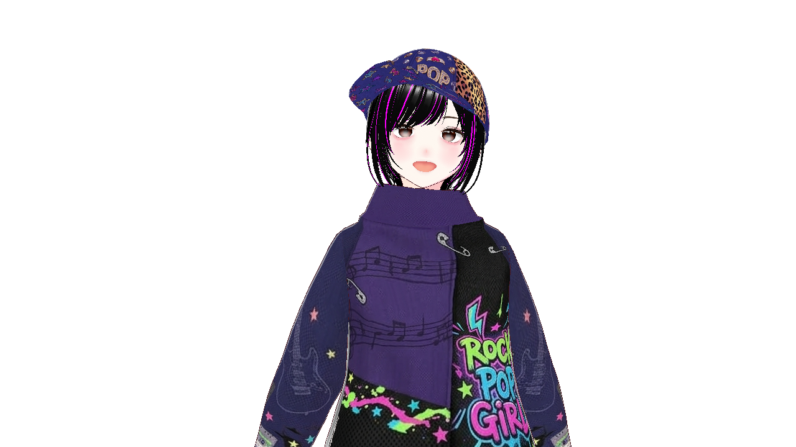
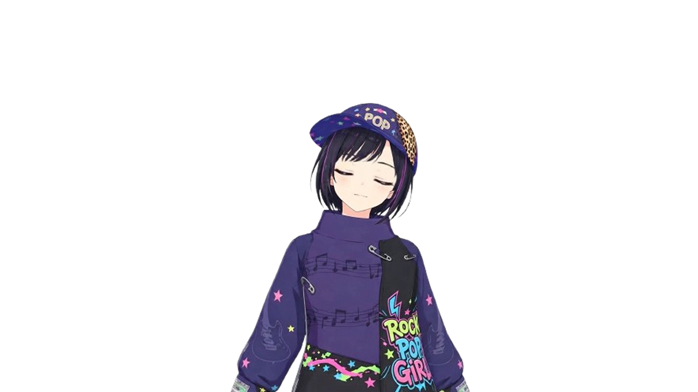

A browser tool where your avatar moves in response to your mic audio
💡 Trial Sample Images (Right-click to save and use)

Talking
BlinkingArticle 1 (Introduction) "maruPNG" (hereinafter "this tool") is a browser-based PNGTuber tool independently created by Maru. Users of this tool are deemed to have agreed to these Terms. Article 2 (License & Usage Scope) 1. Use of this tool is free. You are free to use it for live streaming and video creation, regardless of whether it is personal or corporate, commercial or non-commercial. 2. There are no restrictions on the monetization (Super Chats, Memberships, ad revenue, etc.) of videos or streams created using this tool. Article 3 (Prohibited Matters) Users shall not engage in the following acts: 1. Misappropriating the source code of this tool to claim authorship or distribute it under false pretenses. 2. Interfering with the operation of this tool or the hosting of GitHub Pages. 3. Using the tool in streams or videos containing content that violates public order, morals, or laws. 4. Using the tool for political or religious activities, or similar purposes. 5. Using the tool on adult sites or sites/streams that violate public order and morals. Article 4 (Disclaimer & Limitation of Liability) 1. THIS TOOL IS PROVIDED "AS IS", WITHOUT WARRANTY OF ANY KIND, EXPRESS OR IMPLIED, INCLUDING BUT NOT LIMITED TO THE WARRANTIES OF MERCHANTABILITY, FITNESS FOR A PARTICULAR PURPOSE AND NONINFRINGEMENT. IN NO EVENT SHALL THE AUTHOR BE LIABLE FOR ANY CLAIM, DAMAGES OR OTHER LIABILITY, WHETHER IN AN ACTION OF CONTRACT, TORT OR OTHERWISE, ARISING FROM, OUT OF OR IN CONNECTION WITH THE TOOL OR THE USE OR OTHER DEALINGS IN THE TOOL. 2. USERS SHALL USE THIS TOOL SOLELY AT THEIR OWN RISK. THE AUTHOR ASSUMES NO RESPONSIBILITY OR LIABILITY FOR ANY DIRECT, INDIRECT, INCIDENTAL, SPECIAL, OR CONSEQUENTIAL DAMAGES ARISING OUT OF THE USE OF OR INABILITY TO USE THIS TOOL. Article 5 (Revision of Terms) These terms are subject to change without prior notice.